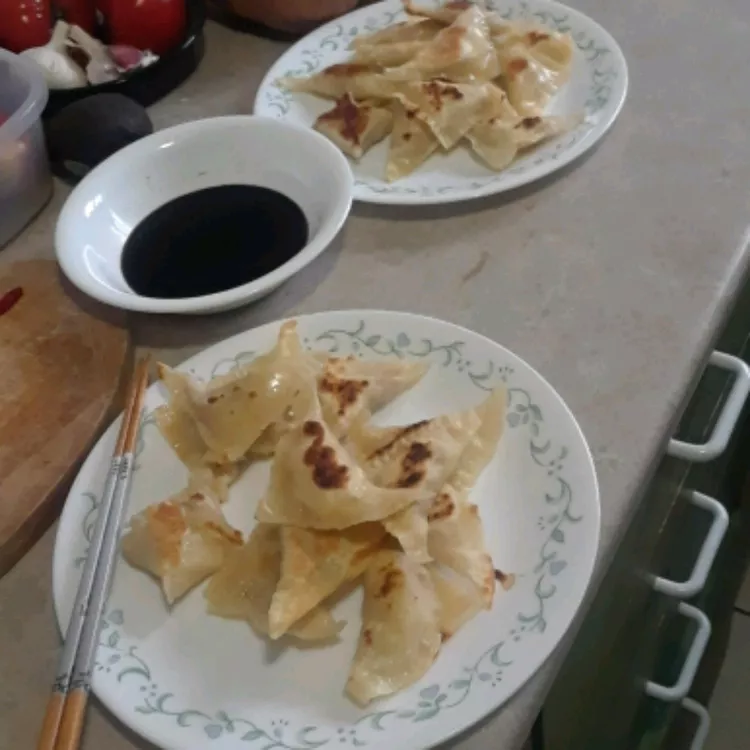

Gyoza

Description
Transport yourself to the vibrant streets of Japan with this tantalizing gyoza recipe. Gyoza, also known as Japanese dumplings, are a harmonious blend of flavors and textures. These delectable bite-sized morsels feature a delicate wrapper filled with a savory mixture of ground meat, vegetables, and aromatic seasonings.
The filling is meticulously crafted, combining ingredients like finely chopped cabbage, minced garlic, grated ginger, and soy sauce to create a tantalizing umami-packed filling. Once assembled, these gyoza are skillfully pan-fried to achieve a crispy and golden brown exterior, while the inside remains juicy and tender. Served alongside a flavorful dipping sauce, these gyoza are an irresistible addition to any meal or a delightful snack on their own. Get ready to embark on a culinary journey as you savor the flavors of Japan with each delectable gyoza.
Ingredients
- 1 tablespoon sesame oil
- 2 cups chopped cabbage
- ¼ cup chopped onion
- ¼ cup chopped carrot
- 1 clove garlic, chopped
- ½ pound ground pork
- 1 large egg
- 1 (10 ounce) package wonton wrappers
- 1 tablespoon vegetable oil
- ¼ cup water
- ¼ cup soy sauce
- 2 tablespoons rice vinegar
Steps
- Heat sesame oil in a large skillet over medium-high heat. Add cabbage, onion, carrot, and garlic; cook and stir until cabbage is limp, 3 to 4 minutes. Add ground pork and egg; cook and stir until pork is browned and crumbly, 5 to 7 minutes.
- Make the gyoza: Place about 1 tablespoon pork mixture into the center of a wonton wrapper. Fold wrapper in half over filling, then seal the edges with moistened fingers. Repeat to make remaining gyoza.
- Heat vegetable oil in a large skillet over medium-high heat. Cook gyoza in the hot skillet until lightly browned, about 1 minute per side. Add water to the skillet, reduce the heat, cover, and steam gyoza until water is gone. Remove from the heat.
- Mix soy sauce and rice vinegar together in a small bowl. Serve as a dipping sauce with gyoza.